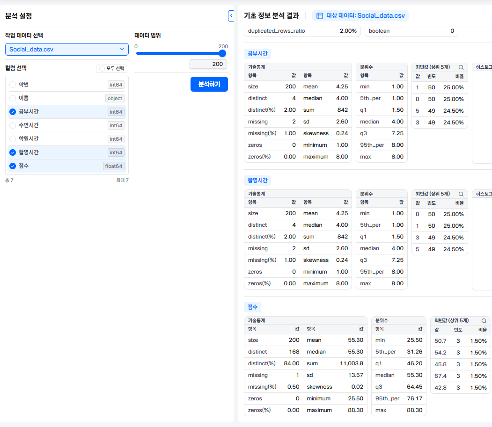
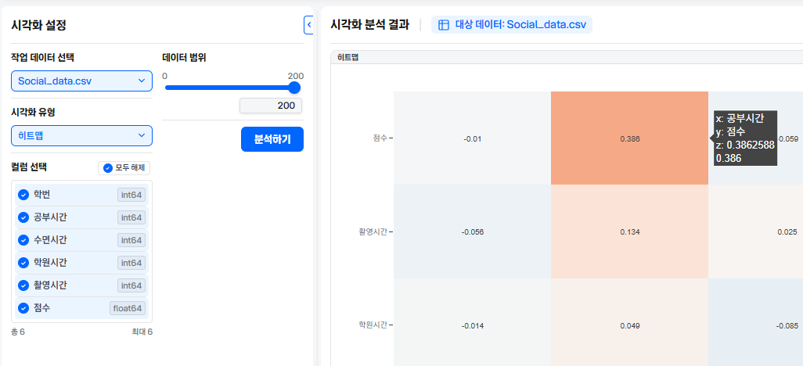
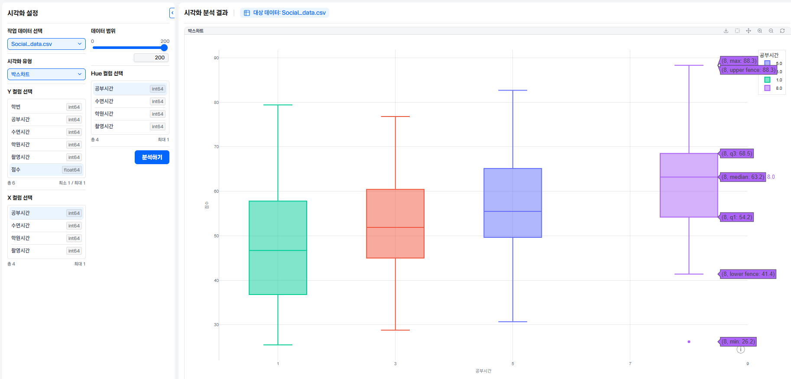
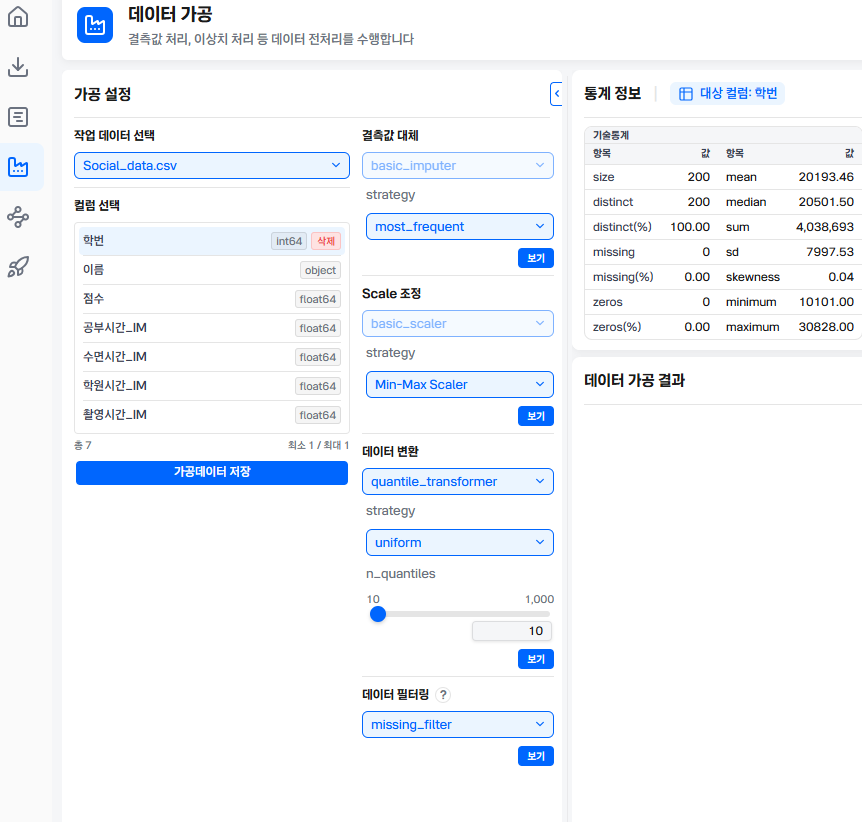
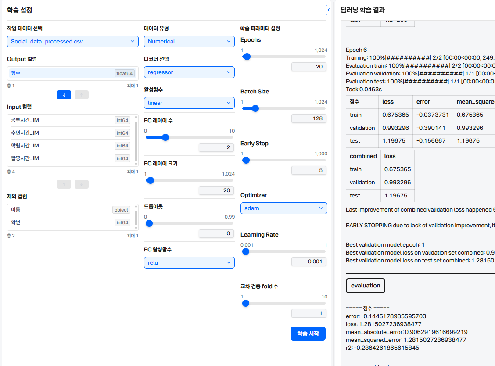
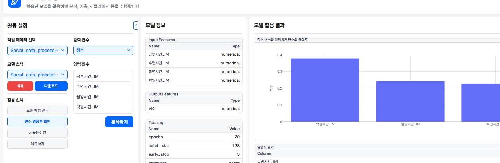
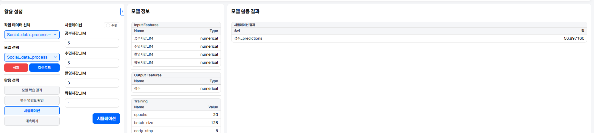

파일 업로드 (CSV/Excel)
로컬 저장소에 있는 CSV, Excel, JSON 등의 정형 데이터 파일을 업로드.
📎 학습 자료 및 실습 파일 관리
과목별 학습 자료 CSV 파일을 다운로드 받으세요
기초정보 분석
문제정의
주어진 데이터는 학생들의 인적 사항(학번, 이름), 생활 시간(공부시간, 수면시간, 촬영시간, 학원시간), 그리고 점수로 구성되어 있습니다. 학생들의 생활 시간을 분석하면 점수를 예측할 수 있습니다. 제시된 문항을 읽고 ① 기초 데이터 분석과 ② 데이터 전처리(가공)를 수행한 뒤, ③ 딥러닝 학습을 통해 생활 시간(독립변수)에 따른 예상 점수를 예측·확인할 수 있는 결과 데이터를 완성하시오.
🧯문제 1
제시된 데이터에서 예측 대상인 종속변수를 고르고, 해당 과제의 데이터 분석 유형(회귀 / 분류) 중 어떤 유형인지 작성하시오?
🧯문제 2
공부시간의 중앙값(Median), 촬영시간의 결측치(Missing) 개수, 점수의 최빈값 중 점수가 가장 큰 값 작성하시오.

시각화분석
🧯문제3
[히트맵]에서 양의 상관관계가 가장 높은 값과 두 개의 변수를 작성하시오

🧯문제4
[박스차트]에서 공부시간이 8인 데이터의 max, median, min 값을 순서대로 작성하시오
Y 컬럼선택 – 점수, X 컬럼선택 – 공부시간 , Hue 컬럼선택 - 공부시간

🧯문제5
[분포차트]에서 촬영시간이 5시간인 데이터 중 점수가 가장 높은 범위와 해당 데이터의 count(개수)를 작성하시오.
X 컬럼 선택 – 점수, Hue 컬럼선택 - 촬영시간

데이터 가공
결측치와 중복 데이터를 처리하고 정돈된 형태로 정제합니다.
데이터 가공

📌공부시간, 수면시간, 학원시간, 촬영시간의 결측치를 대체한 뒤 저장하시오. 원본 데이터는 삭제해도 되지만, 전처리로 생성된 _IM 파일은 삭제하지 마시오.
수치 데이터는 중앙값()으로 대체하고 문자(객체)데이터는 최빈값으로 대체합니다

딥러닝 학습
모델의 학습 성능에 영향을 주는 세부 파라미터 값(학습률, 트리 깊이 등)을 지정합니다.
🧯문제6
📌 output 칼럼, 제외컬럼을 작성하고 FC레이어수 2, FC레이어크기 20, Epochs 20으로 설정. 나머지값은 기본값으로 설정하고 학습한다.
| ouptup컬럼 | 회 귀 | 분 류 |
|---|---|---|
| 데이터유형 | Numerical | Category |
| 디코더선택 | regressor | classifier |
| 활성화함수 | linear | softmax , sigmoid(이진분류) |
| Input 컬럼 | object | sparse |
(학습결과도 같이 나와야 합니다. r2 결정계수, mean_squared_error 평균제곱오차 , mean_absolute_error평균절대오차 포함)

AI 모델 활용
새로운 대량의 데이터셋을 모델에 입력하여 일괄적인 예측 결과 값을 도출합니다.
🧯문제7
출력변수 점수에 변수영향도가 가장 큰 변수를 작성하시오

🧯문제8
[시뮬레이션]에서 공부시간 5, 수면시간 5, 촬영시간 3, 학원시간 1 시간을 입력하고 모델활용 결과 점수를 작성하시오